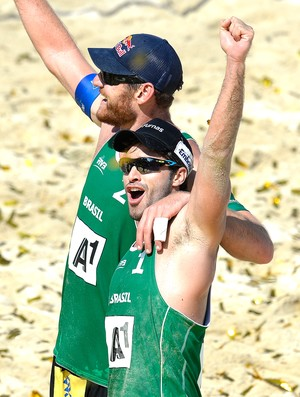

| Site Esporte.com | |||
| Principal | Futebol | Basquete | Vôlei |
Recuperado após 2 cirurgias, Alison volta a jogar com Schmidt em SalvadorApós cinco meses longe das quadra, Alison está de volta. Recuperado de uma pequena cirurgia no joelho direito, em outubro, e de uma operação de emergência para a retirada do apêndice, há quatro semanas, o medalhista de prata nas Olimpíadas de Londres, em 2012, confirmou o retorno para a etapa do Circuito Brasileiro em Salvador (BA), neste final de semana, ao lado de Bruno Schmidt. A nona e última parada do campeonato irá definir o campeão da temporada 2014/2015 entre os homens. O "Mamute" irá disputar a sua terceira etapa no campeonato, depois de subir ao pódio nas duas primeiras (ouro em Niterói e bronze em Campinas). Bruno, por sua vez, competiu em sete torneios com outros parceiros. Foi campeão em Porto Alegre (RS) e vice em São José (SC) com Luciano, atuou ao lado do jovem André Loyola e terminou em terceiro no "Desafio Melhores do Mundo", jogando com Thiago. Ansioso para voltar às areias, Alison agradeceu pelo apoio no tempo em que esteve "fora de combate" e espera recuperar a forma ideal em breve. - Estou com saudade da bola, da adrenalina da competição, de sentir a vibração do público. É ruim ficar fora, foi um período complicado, nunca é bom conviver com lesões e cirurgias. Mas o bom é que passou, ficou para trás, e não vejo a hora de voltar a jogar. Preciso agradecer a todos que estiveram ao meu lado, aos médicos, fisioterapeutas, minha comissão técnica, ao Bruno, todos foram importantes durante esse período de recuperação, de tratamento, me apoiando, me dando força e motivando. O público também foi maravilhoso, por onde eu passava aqui no Espírito Santo, recebia muito carinho de todos. Aos poucos vou recuperar meu melhor ritmo, o mais importante é estar de volta - disse o "Mamute". |
|||
| Desenvolvido por Rafael dos Santos Braz - 2015 | |||